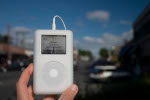
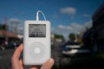
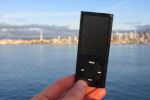
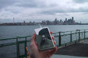
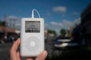
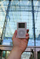
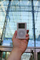

Добро пожаловать туда, где можно похвастаться своим iPod: от раннего iPod Classic до самого современного iPod Nano, от самого маленького iPod Shuffle до самого большого iPod Video, а также цтфровая камера. Просто сфотографируйте свой iPod в любимом месте, и мы будем рады поместить этот снимок на сайте myPod. Итак, чего же вы ждете?
Я и мой iPod в Сиэтле! Здесь видна башня Спейс Нидл. И не видно 628 кафе.



Это несколько фотографий из Бирмингема. Мы повстречали здесь несколько людей, страстно влюбленных в свои iPod. Взгляните на классические британские красные телефонные будки!
 
